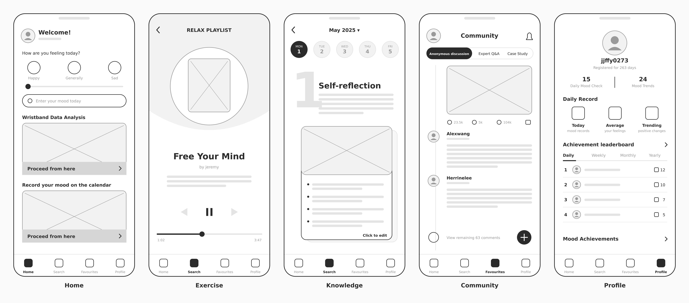
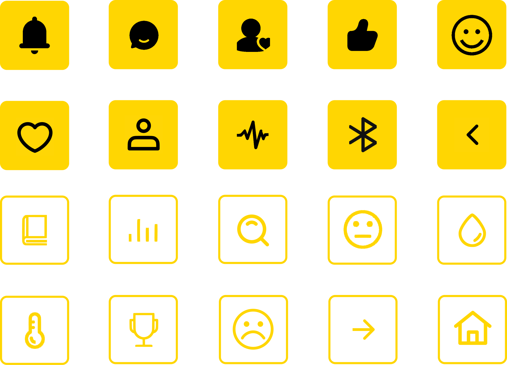
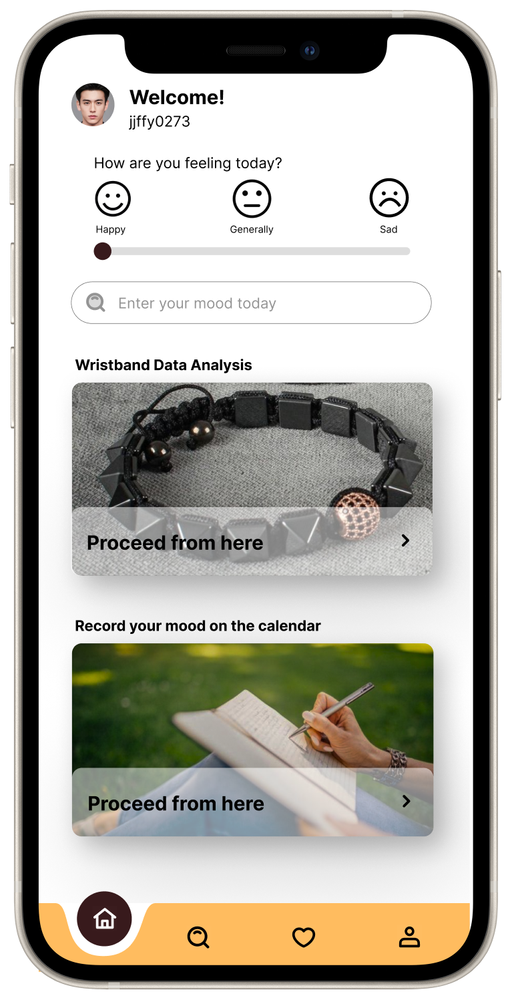

Mood Boost: Emotional Wellbeing for New Fathers
Mood Boost is a connected wellbeing app for new fathers. Paired with a smart wristband, it detects rising stress in real time, turns body signals into clear emotional insights and guides users back to balance in minutes. A shared family tree makes everyday care visible, helping couples divide the load and stay connected.
Project Overview
Postpartum depression affects new fathers too, but support products are built for mothers. Mood Boost gives fathers an everyday way to manage stress and share family life more fairly.


The Problem
(1) Silent Struggle
Fathers rarely talk about how they feel. Stigma keeps stress hidden until it affects their health, work and relationships.
(2) Disconnected Couples
Without a shared view of each others state, small tensions turn into arguments and distance at home.
(3) Invisible Effort
Parenting and housework are rarely shared evenly, and the work that is done often goes unseen.
Costumer Insights
Interviews with new fathers and mothers revealed a clear need: men want support but would not ask for it, and their partners want to help but do not know how.
Target Users
Primary user
First-time fathers aged 28 - 38 balancing a full-time job with a newborn at home.
Secondary user
Their partners, who want visibility and a fair share of the load.
Value Proposition
Every feature answers a real customer need.
- Hidden Stress Real-time Emotion Detection
- Overwhelm Guided Relaxation in Few Minutes
- Poor Communication A shared Family Dashboard
- Isolation A Community of Fathers
Experience Architecture
- Wear the Wristband
- Detect Stress Instantly
- Sync to the App
- Understand Your Emotions
- Relax and Reset
- Share the Load at Home
Product Architecture
Five focused sections keep the experience simple: Home, Exercise, Knowledge, Community and Profile. Device management and data insights sit under Profile, so daily use stays clutter-free.

Brand Identity
Mood Boost is designed to feel like a lifestyle product, not a medical tool. Warm coral, violet and sunny yellow on a deep brown base create an optimistic, approachable brand, while Inter keeps every screen clean and easy to read. Rounded icons add a friendly, low-pressure tone that encourages daily use.
Logo
Mood Boost
Three soft, flowing shapes in yellow, coral and violet come together to form a circle, representing emotions finding balance. The rounded forms keep the brand warm and approachable rather than clinical.
Typography
Inter
- Regular Aa Bb Cc
- Medium Aa Bb Cc
- Bold Aa Bb Cc
Sizes: 10px/12px/14px/16px/18px
Color
- Deep Brown
#341A1C - Coral
#FF5F5F - Violet
#755FFF - Orange
#FFBC5F - Light Grey
#D9D9D9
Icons

Final Showcase

Home
- One-tap mood check-in, so logging takes seconds
- Personal wellbeing snapshot powered by wristband data
- Instant access to the mood calendar

Wristband Insights
- Stress index with daily trends, showing exactly when pressure peaks
- Live heart rate, skin temperature and sweat readings
- Seamless Bluetooth pairing and battery status at a glance


Mood Calendar & Emotional Diary
- Colour-coded calendar reveals emotional patterns over time
- Guided reflection prompts turn feelings into actionable self-awareness
- Log an emotion anytime, anywhere

Relax Playlist


Family Interaction Tree
- Colour-coded tasks across childcare, chores and emotional care
- Every completed task helps the family tree grow, making shared effort visible and rewarding
- Scan the physical tree to sync progress instantly
Impact and Next Steps
Impact
Mood Boost reframes men mental health as an everyday wellbeing habit rather than a crisis. It lowers the barrier to seeking support and gives couples a shared, positive way to talk about family life.
Next Steps
The next stage would be usability testing with real families, stronger privacy controls over what each partner can see, and exploring partnerships with maternity hospitals and employee wellbeing programmes to reach fathers when they need support most.
End
Mood Boost: Emotional Wellbeing for New Fathers